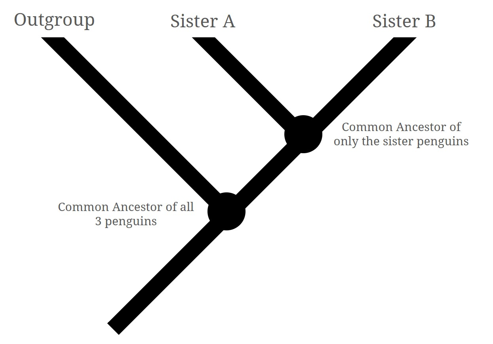
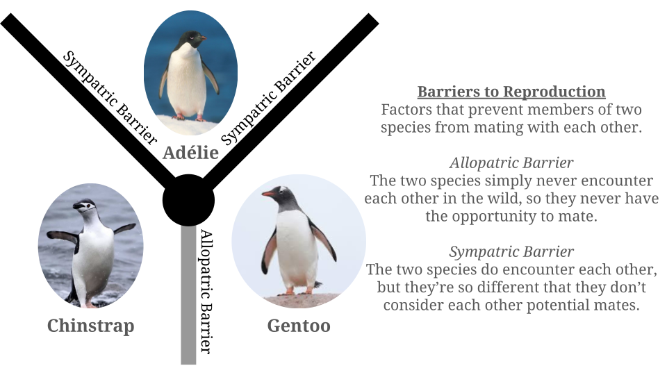

Our goal in this project is to estimate the phylogenetic relationships of
the Adelie, Gentoo, and Chinstrap penguins. These three species of penguins
all share a common ancestor, and one of those species diverged from that common
ancestry a longer time ago than the other two species. That species is called
the “outgroup,” and the other two species are called “sisters.” Because the
outgroup diverged a longer time ago, it will have undergone more evolutionary
changes than the sisters. So we can identify which species is the outgroup by
seeing which species is the most different from the other two.

Phenotypic Data Overview - Scatterplot Array
To start, let’s get a basic idea of what our penguins are like by looking at key
areas of interest in their phenotype: Their bill depth, bill length, body mass,
and flipper length. This graph serves as our first peek at the data and inspires
questions we can ask next.
This graph reveals that the penguins are generally similar, as we don’t see separate
clusters for each species, but there is a small amount of separation going on around
the edge of each cluster.
Phenotypic Data Closer Look - Heatmap
The scatterplot shows us that we won’t be seeing distinct clusters representing each
species. The differences between them will be more subtle. Evolutionarily speaking,
this makes sense, as the groups did not diverge a very long time ago and still occupy
similar habitats. So instead of a scatter plot, let’s make use of a heatmap to show
the relative magnitudes of our phenotypes.
Group Average Heatmap
This shows a pretty clear distinction, that the Gentoo are generally larger than the
Adelie and Chinstrap. This would suggest that the Gentoo are the outgroup, and the
Adelie and Chinstrap are the sisters by the Morphological Species Concept. It's
certainly compelling, but not enough to be completely convincing.
DEFINITION - Morphological Species Concept:
Classifying groups into species based on their physical characteristics
Dietary Data Overview - Interactable Bar Chart
The phenotypic differences make a case for the Gentoo being the outgroup, but
we shouldn't stop there. Another avenue we can explore is the diets of each
species. Let's visualize that with some bar charts.
This bar chart, however, isn’t as conclusive as the heatmap. Each of the
three species eats pretty similar amounts of squid, and they are all fed by
their parents at similar rates, but when it comes to their primary food
sources of fish and krill, there is variation among all three groups. No
two groups eat exactly the same diet, which is unexpected. Perhaps an
explanation for this is that the penguins occupy different areas, so there
is different food available.
Incorporating Geographic Data - Sankey Diagram
Let’s incorporate the question of geography. Geography is a major factor in
speciation, because geographic separation is one of the main ways a group splits
into two species over time. These penguins can be found on three Antarctic islands:
Togensen, Biscoe, and Dream island.
Filters for Sankey Diagram
Sankey Diagram
This diagram is very revealing: the Adelie penguins exist on all 3 islands, but the
Gentoo and Chinstrap are only found on a single island each. This answers our question
of why the dietary data didn’t match speciation patterns: No two species occupy exactly
the same spaces.
This new understanding of the geographic locations of the penguins is actually very
important, because we now know that the Adelie penguins occupy the same habitats
as both Gentoo and Chinstrap penguins, but the Gentoo and Chinstrap habitats do
not overlap with each other.
Significance of Sankey Insight
This means that the Adelie penguins are separated from the Gentoo and Chinstrap penguins
by sympatric barriers, rather than the allopatric barrier between Gentoo and Chinstrap.

In other words, there is no cross-breeding between Adelie and the other penguin species
because the two groups don’t see each other as potential mates. On the other hand, the
reason Gentoo and Chinstrap penguins don’t cross-breed is simply because they don’t
naturally encounter each other. The existence of sympatric barriers around the Adelie
penguin is a textbook example of the Biological Species Concept, strong evidence
that they are the outgroup, and the Gentoo and Chinstrap are the sisters.
DEFINITION - Biological Species Concept:
Classifying groups into species based on who they reproduce with.
Conclusion
In this interactive slideshow, we have used visualizations to understand our dataset, and to
use that understanding to guide our questioning process. We first used a basic scatter plot
to get a basic understanding of our data, which led us to our heatmap showing how the Gentoo
penguins tend to have larger bodies than the other groups, which is notable, albeit somewhat
weak, evidence of the Gentoo being the outgroup.
Next, we constructed a basic bar chart to look at the dietary habits of the penguins. We
couldn’t quite explain the bar chart in terms of phylogenetic relationship, and instead we
hypothesized that the answer lied in geography. Therefore, we made a sankey diagram that also
illustrated the penguin’s geography, as well as their diets. Our hunch was right; the penguins
all have dissimilar geographical habitats. More importantly, this revealed that the Adelie
penguins coexist with the Gentoo and Chinstrap penguins, but the Gentoo and Chinstrap penguins
do not coexist with each other. This indicates the existence of sympatric barriers between the
Adelie and the others, which is very strong evidence of the Adelie being the outgroup.
So our conclusion is that the Adelie penguins are the outgroup. With this, we looked at professional
research into the topic, and it looks like we’re right! The study Multiple gene evidence for expansion
of extant penguins out of Antarctica due to global cooling by Baker et. al. uses genetic data to
analyze the phylogeny, finding that the Adelie penguins diverged longer ago than the Gentoo and Chinstraps,
matching our conclusion.
Reference
Baker AJ, Pereira SL, Haddrath OP, Edge KA. Multiple gene evidence
for expansion of extant penguins out of Antarctica due to global cooling.
Proc Biol Sci. 2006 Jan 7;273(1582):11-7. doi: 10.1098/rspb.2005.3260.
PMID: 16519228; PMCID: PMC1560011.